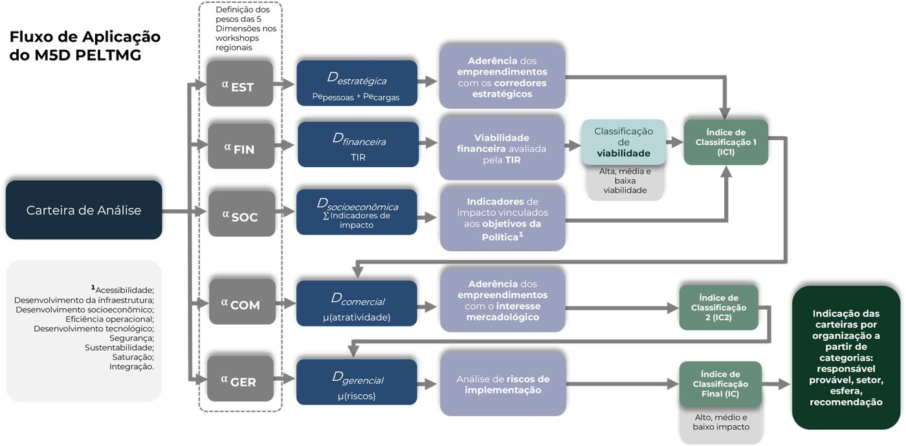

PELT-MG: the Minas Gerais transport plan to 2055
The Minas Gerais State Logistics and Transport Plan, Long Term, analyzed an investment portfolio of over R$ 1 trillion across six transport modes and prioritized 1,117 projects for a 2055 horizon. I worked on the CODEMGE technical team that built the plan.
R$ 1T+in the investment portfolio analyzed: 1,677 projects and 7,683 works
Project sheet
- Task
- Database, project portfolio, spatial analysis and indicators for a state transport plan
- Data and scale
- 1,677 projects and 7,683 works analyzed; 5,589 traffic zones; big data from electronic tax invoices and mobile phones
- Method and validation
- Five-Dimension Model (the UK Treasury's Five Case Model), with a 2023 baseline and four 2055 scenarios
- Result
- Portfolio of over R$ 1 trillion analyzed; 1,117 projects prioritized; plan released for public consultation in 2026

Problem
Minas Gerais has one of Brazil's largest transport networks and must decide where to invest in roads, railways, airports, pipelines, ports and waterways for the next three decades. The Long-Term PELT-MG answers that with data: it measures freight and passenger demand, simulates the network and ranks every project.
Data and scale
- Horizon from 2023 to 2055, with a 2023 baseline, four future scenarios and a counterfactual.
- Portfolio of over R$ 1 trillion analyzed (CAPEX and OPEX): 1,677 projects, 7,683 works and 55 initiatives, covering 99% of the state's municipalities.
- Six modes: road (1,507 projects), rail (104), air (33), pipeline (18), port (8) and waterway (7).
- 2023 demand: about 525 million tonnes of freight and 350 million intercity passenger trips per year, with trip growth projected to 2055.
- Origin-destination matrices with 5,589 traffic zones, built from electronic tax invoice big data (freight) and mobile phone data (people).
Approach
- A single PostgreSQL/PostGIS database for the plan's portfolio, networks and indicators, which I managed.
- Digitized projects, ran the portfolio's spatial analyses and kept data loading and updates going.
- Built the portfolio scenarios and audited the accessibility view used in the prioritization indicators.
- Link tables between airports, municipalities and planning units, and a historical rail passenger series.
- Took part in building and reviewing the plan's Power BI dashboard, published for the public consultation.
How I validated it
- Ranking by the Five-Dimension Model, with an index combining the strategic, socioeconomic and financial dimensions in this version.
- More than 50 socioeconomic indicators in nine dimensions, with weights set in regional workshops.
- External technical review by Fundação Dom Cabral.
Result
- Long-Term Plan released for public consultation in 2026, with 1,117 projects prioritized.
- A public Power BI dashboard with the portfolio by sector, status, municipality and funding source.
- A single spatial database behind the report's maps, dashboard and tables.
My role
On CODEMGE's technical team: the plan's PostgreSQL/PostGIS database, project portfolio, spatial analyses and indicators, plus building and reviewing the dashboard.
Figures


